App de citas para clases de pilates
Los alumnos reservan, cambian y anulan su plaza desde el móvil. La clínica dejó de llevar la agenda a mano y de perder plazas por cancelaciones de última hora.

Estudio digital · Web + IA
Diseño web, agentes de IA y auditoría para tu negocio. Listo en una semana.
Todo lo que montamos se mide en una sola cosa: cuánto dinero más entra en tu negocio.
Webs que venden y sistemas que trabajan solos, para que tu negocio deje de parecerse a todos los demás.
Analizamos tu negocio, tu web actual y dónde pierdes clientes o tiempo cada semana.
Una solución concreta, con alcance y precio cerrado desde el primer momento.
Creamos tu web y tus automatizaciones, con revisiones contigo en cada fase.
Publicamos, probamos todo a fondo y nos aseguramos de que cada detalle funciona.
Seguimos a tu lado con soporte, mejoras y ajustes a medida que tu negocio crece.
Diseño pensado para convertir visitas en clientes. Sin plantillas recicladas, con precio cerrado.
Ver páginas webAutomatización de procesos y la herramienta con IA que tu negocio necesite, hecha a medida.
Ver automatización e IAAuditoría completa, por fuera y por dentro, con informe y plan de acción. 550 € (450 € con servicio).
Ver auditoría de negocioResultados
No vendemos tecnología. Vendemos que a final de año haya entrado en tu negocio más dinero del que nos pagaste. Así sale la cuenta en un caso real:
De dónde sale ese dinero
Una clínica con tres sistemas de Anomalia. Cifras estimadas con los números de la propia clínica. En tu primera cita hacemos esta misma cuenta con los tuyos.
Los tres sistemas
Los alumnos reservan, cambian y anulan su plaza desde el móvil. La clínica dejó de llevar la agenda a mano y de perder plazas por cancelaciones de última hora.
Atiende 24/7, identifica al paciente, agenda y anula citas reales en la agenda, responde dudas y toma recados fuera de horario para que nadie se quede sin respuesta.
Coge las llamadas que antes se perdían, reserva en la agenda real con el profesional correcto y avisa al equipo al colgar con un resumen de la llamada.
Sin compromiso. Cuéntale a nuestro asistente qué necesita tu negocio y deja tu cita agendada al momento, o pide que te llamemos.
Hablas directamente con quien construye tu proyecto, no con un departamento de atención al cliente. Respondemos en menos de 24 h laborables.
https://anomalia.business
En cumplimiento con el deber de información dispuesto en la Ley 34/2002 de Servicios de la Sociedad de la Información y el Comercio Electrónico (LSSI-CE) de 11 de julio, se facilitan a continuación los siguientes datos de información general de este sitio web:
La titularidad de este sitio web, https://anomalia.business, (en adelante, Sitio Web) la ostenta: Marcos Mompean Lopez, con NIF: 48764433V, y cuyos datos de contacto son:
Dirección: Avenida de la Deportista Miriam Blasco 14, bloque 9, piso 6.º D, Alicante
Teléfono de contacto: 601 44 91 73
Email de contacto: contacto@anomalia.business
El objeto de las presentes Condiciones Generales de Uso (en adelante, Condiciones) es regular el acceso y la utilización del Sitio Web. A los efectos de las presentes Condiciones se entenderá como Sitio Web: la apariencia externa de los interfaces de pantalla, tanto de forma estática como de forma dinámica, es decir, el árbol de navegación; y todos los elementos integrados tanto en los interfaces de pantalla como en el árbol de navegación (en adelante, Contenidos) y todos aquellos servicios o recursos en línea que en su caso ofrezca a los Usuarios (en adelante, Servicios).
Anomalia se reserva la facultad de modificar, en cualquier momento, y sin aviso previo, la presentación y configuración del Sitio Web y de los Contenidos y Servicios que en él pudieran estar incorporados. El Usuario reconoce y acepta que en cualquier momento Anomalia pueda interrumpir, desactivar y/o cancelar cualquiera de estos elementos que se integran en el Sitio Web o el acceso a los mismos.
El acceso al Sitio Web por el Usuario tiene carácter libre y, por regla general, es gratuito sin que el Usuario tenga que proporcionar una contraprestación para poder disfrutar de ello, salvo en lo relativo al coste de conexión a través de la red de telecomunicaciones suministrada por el proveedor de acceso que hubiere contratado el Usuario.
La utilización de alguno de los Contenidos o Servicios del Sitio Web podrá hacerse mediante la suscripción o registro previo del Usuario.
El acceso, la navegación y uso del Sitio Web, confiere la condición de Usuario, por lo que se aceptan, desde que se inicia la navegación por el Sitio Web, todas las Condiciones aquí establecidas, así como sus ulteriores modificaciones, sin perjuicio de la aplicación de la correspondiente normativa legal de obligado cumplimiento según el caso. Dada la relevancia de lo anterior, se recomienda al Usuario leerlas cada vez que visite el Sitio Web.
El Sitio Web de Anomalia proporciona gran diversidad de información, servicios y datos. El Usuario asume su responsabilidad para realizar un uso correcto del Sitio Web. Esta responsabilidad se extenderá a:
El mero acceso a este Sitio Web no supone entablar ningún tipo de relación de carácter comercial entre Anomalia y el Usuario.
El Usuario declara ser mayor de edad y disponer de la capacidad jurídica suficiente para vincularse por las presentes Condiciones. Por lo tanto, este Sitio Web de Anomalia no se dirige a menores de edad. Anomalia declina cualquier responsabilidad por el incumplimiento de este requisito.
Anomalia no garantiza la continuidad, disponibilidad y utilidad del Sitio Web, ni de los Contenidos o Servicios. Anomalia hará todo lo posible por el buen funcionamiento del Sitio Web, sin embargo, no se responsabiliza ni garantiza que el acceso a este Sitio Web no vaya a ser ininterrumpido o que esté libre de error.
Tampoco se responsabiliza o garantiza que el contenido o software al que pueda accederse a través de este Sitio Web, esté libre de error o cause un daño al sistema informático (software y hardware) del Usuario. En ningún caso Anomalia será responsable por las pérdidas, daños o perjuicios de cualquier tipo que surjan por el acceso, navegación y el uso del Sitio Web, incluyéndose, pero no limitándose, a los ocasionados a los sistemas informáticos o los provocados por la introducción de virus.
Anomalia tampoco se hace responsable de los daños que pudiesen ocasionarse a los usuarios por un uso inadecuado de este Sitio Web. En particular, no se hace responsable en modo alguno de las caídas, interrupciones, falta o defecto de las telecomunicaciones que pudieran ocurrir.
El Usuario o tercero que realice un hipervínculo desde una página web de otro, distinto, sitio web al Sitio Web de Anomalia deberá saber que:
No se permite la reproducción —total o parcialmente— de ninguno de los Contenidos y/o Servicios del Sitio Web sin autorización expresa de Anomalia.
No se permite tampoco ninguna manifestación falsa, inexacta o incorrecta sobre el Sitio Web de Anomalia, ni sobre los Contenidos y/o Servicios del mismo.
A excepción del hipervínculo, el sitio web en el que se establezca dicho hiperenlace no contendrá ningún elemento, de este Sitio Web, protegido como propiedad intelectual por el ordenamiento jurídico español, salvo autorización expresa de Anomalia.
El establecimiento del hipervínculo no implicará la existencia de relaciones entre Anomalia y el titular del sitio web desde el cual se realice, ni el conocimiento y aceptación de Anomalia de los contenidos, servicios y/o actividades ofrecidas en dicho sitio web, y viceversa.
Anomalia por sí o como parte cesionaria, es titular de todos los derechos de propiedad intelectual e industrial del Sitio Web, así como de los elementos contenidos en el mismo (a título enunciativo y no exhaustivo, imágenes, sonido, audio, vídeo, software o textos, marcas o logotipos, combinaciones de colores, estructura y diseño, selección de materiales usados, programas de ordenador necesarios para su funcionamiento, acceso y uso, etc.). Serán, por consiguiente, obras protegidas como propiedad intelectual por el ordenamiento jurídico español, siéndoles aplicables tanto la normativa española y comunitaria en este campo, como los tratados internacionales relativos a la materia y suscritos por España.
Todos los derechos reservados. En virtud de lo dispuesto en la Ley de Propiedad Intelectual, quedan expresamente prohibidas la reproducción, la distribución y la comunicación pública, incluida su modalidad de puesta a disposición, de la totalidad o parte de los contenidos de esta página web, con fines comerciales, en cualquier soporte y por cualquier medio técnico, sin la autorización de Anomalia.
El Usuario se compromete a respetar los derechos de propiedad intelectual e industrial de Anomalia. Podrá visualizar los elementos del Sitio Web o incluso imprimirlos, copiarlos y almacenarlos en el disco duro de su ordenador o en cualquier otro soporte físico siempre y cuando sea, exclusivamente, para su uso personal. El Usuario, sin embargo, no podrá suprimir, alterar, o manipular cualquier dispositivo de protección o sistema de seguridad que estuviera instalado en el Sitio Web.
En caso de que el Usuario o tercero considere que cualquiera de los Contenidos del Sitio Web suponga una violación de los derechos de protección de la propiedad intelectual, deberá comunicarlo inmediatamente a Anomalia a través de los datos de contacto del apartado de INFORMACIÓN GENERAL de este Aviso Legal y Condiciones Generales de Uso.
Anomalia se reserva la facultad de presentar las acciones civiles o penales que considere necesarias por la utilización indebida del Sitio Web y Contenidos, o por el incumplimiento de las presentes Condiciones.
La relación entre el Usuario y Anomalia se regirá por la normativa vigente y de aplicación en el territorio español. De surgir cualquier controversia en relación con la interpretación y/o a la aplicación de estas Condiciones las partes someterán sus conflictos a la jurisdicción ordinaria sometiéndose a los jueces y tribunales que correspondan conforme a derecho.
Este documento de Aviso Legal y Condiciones Generales de uso del sitio web ha sido creado mediante el generador de plantilla de aviso legal y condiciones de uso online el día 03/08/2026.
https://anomalia.business
Respetando lo establecido en la legislación vigente, Anomalia (en adelante, también Sitio Web) se compromete a adoptar las medidas técnicas y organizativas necesarias, según el nivel de seguridad adecuado al riesgo de los datos recogidos.
Esta política de privacidad está adaptada a la normativa española y europea vigente en materia de protección de datos personales en internet. En concreto, la misma respeta las siguientes normas:
El responsable del tratamiento de los datos personales recogidos en Anomalia es: Marcos Mompean Lopez, con NIF: 48764433V (en adelante, Responsable del tratamiento). Sus datos de contacto son los siguientes:
Dirección: Avenida de la Deportista Miriam Blasco 14, bloque 9, piso 6.º D, Alicante
Teléfono de contacto: 601 44 91 73
Email de contacto: contacto@anomalia.business
En cumplimiento de lo establecido en el RGPD y la LOPD-GDD, le informamos que los datos personales recabados por Anomalia, mediante los formularios extendidos en sus páginas quedarán incorporados y serán tratados en nuestro fichero con el fin de poder facilitar, agilizar y cumplir los compromisos establecidos entre Anomalia y el Usuario o el mantenimiento de la relación que se establezca en los formularios que este rellene, o para atender una solicitud o consulta del mismo. Asimismo, de conformidad con lo previsto en el RGPD y la LOPD-GDD, salvo que sea de aplicación la excepción prevista en el artículo 30.5 del RGPD, se mantiene un registro de actividades de tratamiento que especifica, según sus finalidades, las actividades de tratamiento llevadas a cabo y las demás circunstancias establecidas en el RGPD.
El tratamiento de los datos personales del Usuario se someterá a los siguientes principios recogidos en el artículo 5 del RGPD y en el artículo 4 y siguientes de la Ley Orgánica 3/2018, de 5 de diciembre, de Protección de Datos Personales y garantía de los derechos digitales:
Las categorías de datos que se tratan en Anomalia son únicamente datos identificativos. En ningún caso, se tratan categorías especiales de datos personales en el sentido del artículo 9 del RGPD.
La base legal para el tratamiento de los datos personales es el consentimiento. Anomalia se compromete a recabar el consentimiento expreso y verificable del Usuario para el tratamiento de sus datos personales para uno o varios fines específicos.
El Usuario tendrá derecho a retirar su consentimiento en cualquier momento. Será tan fácil retirar el consentimiento como darlo. Como regla general, la retirada del consentimiento no condicionará el uso del Sitio Web.
En las ocasiones en las que el Usuario deba o pueda facilitar sus datos a través de formularios para realizar consultas, solicitar información o por motivos relacionados con el contenido del Sitio Web, se le informará en caso de que la cumplimentación de alguno de ellos sea obligatoria debido a que los mismos sean imprescindibles para el correcto desarrollo de la operación realizada.
Los datos personales son recabados y gestionados por Anomalia con la finalidad de poder facilitar, agilizar y cumplir los compromisos establecidos entre el Sitio Web y el Usuario o el mantenimiento de la relación que se establezca en los formularios que este último rellene o para atender una solicitud o consulta.
Igualmente, los datos podrán ser utilizados con una finalidad comercial de personalización, operativa y estadística, y actividades propias del objeto social de Anomalia, así como para la extracción, almacenamiento de datos y estudios de marketing para adecuar el Contenido ofertado al Usuario, así como mejorar la calidad, funcionamiento y navegación por el Sitio Web.
En el momento en que se obtengan los datos personales, se informará al Usuario acerca del fin o fines específicos del tratamiento a que se destinarán los datos personales; es decir, del uso o usos que se dará a la información recopilada.
Los datos personales solo serán retenidos durante el tiempo mínimo necesario para los fines de su tratamiento y, en todo caso, únicamente durante el siguiente plazo: 6 meses, o hasta que el Usuario solicite su supresión.
En el momento en que se obtengan los datos personales, se informará al Usuario acerca del plazo durante el cual se conservarán los datos personales o, cuando eso no sea posible, los criterios utilizados para determinar este plazo.
Los datos personales del Usuario serán compartidos con los siguientes destinatarios o categorías de destinatarios:
Marcos Mompean Lopez: Avenida de la Deportista Miriam Blasco 14, bloque 9, piso 6.º D, Alicante
En caso de que el Responsable del tratamiento tenga la intención de transferir datos personales a un tercer país u organización internacional, en el momento en que se obtengan los datos personales, se informará al Usuario acerca del tercer país u organización internacional al cual se tiene la intención de transferir los datos, así como de la existencia o ausencia de una decisión de adecuación de la Comisión.
Respetando lo establecido en los artículos 8 del RGPD y 7 de la Ley Orgánica 3/2018, de 5 de diciembre, de Protección de Datos Personales y garantía de los derechos digitales, solo los mayores de 14 años podrán otorgar su consentimiento para el tratamiento de sus datos personales de forma lícita por Anomalia. Si se trata de un menor de 14 años, será necesario el consentimiento de los padres o tutores para el tratamiento, y este solo se considerará lícito en la medida en la que los mismos lo hayan autorizado.
Anomalia se compromete a adoptar las medidas técnicas y organizativas necesarias, según el nivel de seguridad adecuado al riesgo de los datos recogidos, de forma que se garantice la seguridad de los datos de carácter personal y se evite la destrucción, pérdida o alteración accidental o ilícita de datos personales transmitidos, conservados o tratados de otra forma, o la comunicación o acceso no autorizados a dichos datos.
El Sitio Web cuenta con un certificado SSL (Secure Socket Layer), que asegura que los datos personales se transmiten de forma segura y confidencial, al ser la transmisión de los datos entre el servidor y el Usuario, y en retroalimentación, totalmente cifrada o encriptada.
Sin embargo, debido a que Anomalia no puede garantizar la inexpugnabilidad de internet ni la ausencia total de hackers u otros que accedan de modo fraudulento a los datos personales, el Responsable del tratamiento se compromete a comunicar al Usuario sin dilación indebida cuando ocurra una violación de la seguridad de los datos personales que sea probable que entrañe un alto riesgo para los derechos y libertades de las personas físicas. Siguiendo lo establecido en el artículo 4 del RGPD, se entiende por violación de la seguridad de los datos personales toda violación de la seguridad que ocasione la destrucción, pérdida o alteración accidental o ilícita de datos personales transmitidos, conservados o tratados de otra forma, o la comunicación o acceso no autorizados a dichos datos.
Los datos personales serán tratados como confidenciales por el Responsable del tratamiento, quien se compromete a informar de y a garantizar por medio de una obligación legal o contractual que dicha confidencialidad sea respetada por sus empleados, asociados, y toda persona a la cual le haga accesible la información.
El Usuario tiene sobre Anomalia y podrá, por tanto, ejercer frente al Responsable del tratamiento los siguientes derechos reconocidos en el RGPD y la Ley Orgánica 3/2018, de 5 de diciembre, de Protección de Datos Personales y garantía de los derechos digitales:
Así pues, el Usuario podrá ejercitar sus derechos mediante comunicación escrita dirigida al Responsable del tratamiento con la referencia "RGPD-https://anomalia.business", especificando:
Esta solicitud y todo otro documento adjunto podrá enviarse a la siguiente dirección y/o correo electrónico:
Dirección postal: Avenida de la Deportista Miriam Blasco 14, bloque 9, piso 6.º D, Alicante
Correo electrónico: contacto@anomalia.business
El Sitio Web puede incluir hipervínculos o enlaces que permiten acceder a páginas web de terceros distintos de Anomalia, y que por tanto no son operados por Anomalia. Los titulares de dichos sitios web dispondrán de sus propias políticas de protección de datos, siendo ellos mismos, en cada caso, responsables de sus propios ficheros y de sus propias prácticas de privacidad.
En caso de que el Usuario considere que existe un problema o infracción de la normativa vigente en la forma en la que se están tratando sus datos personales, tendrá derecho a la tutela judicial efectiva y a presentar una reclamación ante una autoridad de control, en particular, en el Estado en el que tenga su residencia habitual, lugar de trabajo o lugar de la supuesta infracción. En el caso de España, la autoridad de control es la Agencia Española de Protección de Datos (https://www.aepd.es/).
Es necesario que el Usuario haya leído y esté conforme con las condiciones sobre la protección de datos de carácter personal contenidas en esta Política de Privacidad, así como que acepte el tratamiento de sus datos personales para que el Responsable del tratamiento pueda proceder al mismo en la forma, durante los plazos y para las finalidades indicadas. El uso del Sitio Web implicará la aceptación de la Política de Privacidad del mismo.
Anomalia se reserva el derecho a modificar su Política de Privacidad, de acuerdo a su propio criterio, o motivado por un cambio legislativo, jurisprudencial o doctrinal de la Agencia Española de Protección de Datos. Los cambios o actualizaciones de esta Política de Privacidad no serán notificados de forma explícita al Usuario. Se recomienda al Usuario consultar esta página de forma periódica para estar al tanto de los últimos cambios o actualizaciones.
Esta Política de Privacidad fue actualizada para adaptarse al Reglamento (UE) 2016/679 del Parlamento Europeo y del Consejo, de 27 de abril de 2016, relativo a la protección de las personas físicas en lo que respecta al tratamiento de datos personales y a la libre circulación de estos datos (RGPD) y a la Ley Orgánica 3/2018, de 5 de diciembre, de Protección de Datos Personales y garantía de los derechos digitales.
Este documento de Política de Privacidad de un sitio web ha sido creado mediante el generador de plantilla de política de privacidad web gratis online el día 03/08/2026.
https://anomalia.business
El acceso a este Sitio Web puede implicar la utilización de cookies. Las cookies son pequeñas cantidades de información que se almacenan en el navegador utilizado por cada Usuario —en los distintos dispositivos que pueda utilizar para navegar— para que el servidor recuerde cierta información que posteriormente y únicamente el servidor que la implementó leerá. Las cookies facilitan la navegación, la hacen más amigable, y no dañan el dispositivo de navegación.
Las cookies son procedimientos automáticos de recogida de información relativa a las preferencias determinadas por el Usuario durante su visita al Sitio Web con el fin de reconocerlo como Usuario, y personalizar su experiencia y el uso del Sitio Web, y pueden también, por ejemplo, ayudar a identificar y resolver errores.
La información recabada a través de las cookies puede incluir la fecha y hora de visitas al Sitio Web, las páginas visionadas, el tiempo que ha estado en el Sitio Web y los sitios visitados justo antes y después del mismo. Sin embargo, ninguna cookie permite que esta misma pueda contactarse con el número de teléfono del Usuario o con cualquier otro medio de contacto personal. Ninguna cookie puede extraer información del disco duro del Usuario o robar información personal. La única manera de que la información privada del Usuario forme parte del archivo Cookie es que el usuario dé personalmente esa información al servidor.
Las cookies que permiten identificar a una persona se consideran datos personales. Por tanto, a las mismas les será de aplicación la Política de Privacidad anteriormente descrita. En este sentido, para la utilización de las mismas será necesario el consentimiento del Usuario. Este consentimiento será comunicado, en base a una elección auténtica, ofrecido mediante una decisión afirmativa y positiva, antes del tratamiento inicial, removible y documentado.
Son aquellas cookies que son enviadas al ordenador o dispositivo del Usuario y gestionadas exclusivamente por Anomalia para el mejor funcionamiento del Sitio Web. La información que se recaba se emplea para mejorar la calidad del Sitio Web y su Contenido y su experiencia como Usuario. Estas cookies permiten reconocer al Usuario como visitante recurrente del Sitio Web y adaptar el contenido para ofrecerle contenidos que se ajusten a sus preferencias.
Anomalia incorpora plugins de redes sociales, que permiten acceder a las mismas a partir del Sitio Web. Por esta razón, las cookies de redes sociales pueden almacenarse en el navegador del Usuario. Los titulares de dichas redes sociales disponen de sus propias políticas de protección de datos y de cookies, siendo ellos mismos, en cada caso, responsables de sus propios ficheros y de sus propias prácticas de privacidad. El Usuario debe referirse a las mismas para informarse acerca de dichas cookies y, en su caso, del tratamiento de sus datos personales. Únicamente a título informativo se indican a continuación los enlaces en los que se pueden consultar dichas políticas de privacidad y/o de cookies:
El Usuario puede deshabilitar, rechazar y eliminar las cookies —total o parcialmente— instaladas en su dispositivo mediante la configuración de su navegador (entre los que se encuentran, por ejemplo, Chrome, Firefox, Safari, Explorer). En este sentido, los procedimientos para rechazar y eliminar las cookies pueden diferir de un navegador de Internet a otro. En consecuencia, el Usuario debe acudir a las instrucciones facilitadas por el propio navegador de Internet que esté utilizando. En el supuesto de que rechace el uso de cookies —total o parcialmente— podrá seguir usando el Sitio Web, si bien podrá tener limitada la utilización de algunas de las prestaciones del mismo.
Este documento de Política de Cookies ha sido creado mediante el generador de plantilla de política de cookies web gratis online el día 03/08/2026.